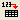

Stapelverarbeitung mehrerer Datensätze
Zusammenfassung
Mit Origin können Anwender eine Stapelverarbeitung von mehreren Dateien oder Datensätzen mit Hilfe einer Analysevorlage oder der aktuell aktiven Arbeitsmappe mit Analyseoperationen durchführen. Diese Tutorial legt den Schwerpunkt auf die Stapelanalyse von mehreren Datensätzen mit Hilfe der aktuellen aktiven Arbeitsmappen-/Analysevorlage.
Was Sie lernen werden
Dieses Tutorial zeigt Ihnen, wie Sie:
- eine Analyse auf einen Beispieldatensatz durchführen und ein neues Ergebnisblatt mit den gewünschten Ergebnissen erstellen,
- die Stapelverarbeitung von mehreren Datensätzen mit Hilfe der aktuell aktiven Arbeitsmappe, die die Analyseoperationen mit der Neuberechnung enthält, durchführen.
Schritte
Anpassung zuerst für einen Datensatz durchführen
- Öffnen Sie eine neue Arbeitsmappe, klicken Sie auf die Schaltfläche  und navigieren Sie zum Ordner <Origin-Verzeichnis>\Samples\Curve Fitting\. Wählen Sie die Datei Sensor01.dat, um die Daten mit den Standardimporteinstellungen zu importieren.
- Markieren Sie Spalte B und verwenden Sie Analyse: Anpassen: Linearer Fit, um den Dialog Lineare Anpassung zu öffnen. Setzen Sie Neu berechnen auf Auto und gehen Sie dann zur Registerkarte Fit-Steuerung. Aktivieren Sie das Kontrollkästchen Fester Schnittpunkt mit der Y-Achse und setzen Sie Fester Schnittpunkt mit der Y-Achse bei auf 0.
- Klicken Sie auf OK, um die Anpassung durchzuführen.
- Gehen Sie zum Blatt FitLinear1 und klicken Sie auf den nach unten weisenden Pfeil neben dem Zweig Zusammenfassung, um Kopie als neues Blatt erstellen auszuwählen. Ein neues Blatt, "Summary", mit den Anpassungsergebnissen wird erstellt. Gehen Sie zu diesem neuen Blatt, benennen Sie es in "Result" um und löschen Sie col(A).
Anpassung für mehrere Datensätze mit dem Hilfsmittel Stapelverarbeitung durchführen
- Aktivieren Sie die Arbeitsmappe. Wählen Sie Datei: Stapelverarbeitung im Menü oder klicken Sie auf die Schaltfläche Stapelverarbeitung
 auf der Symbolleiste Standard, um den Dialog Stapelverarbeitung öffnen.
auf der Symbolleiste Standard, um den Dialog Stapelverarbeitung öffnen.
- Aktivieren Sie das Kontrollkästchen Wiederholter Import in aktives Fenster der Analysevorlage für den Modus Stapelverarbeitung.
Hinweis: Sie können auch eine Analysevorlage speichern und sie mit der Schaltfläche Analysevorlage laden in Ihren Stapelverarbeitungsroutinen verwenden.
- Wählen Sie Aus Dateien importieren aus der Auswahlliste Datenquelle.
- Klicken Sie auf die Schaltfläche Durchsuchen neben dem Feld Dateiliste und wählen Sie alle Sensordaten Sensor##.dat im Ordner <Origin EXE Folder>\Samples\Curve Fitting.
- Wählen Sie Dateiname für Datensatzidentifikator.
- Stellen Sie sicher, dass in der Auswahlliste Datenblatt die Option Sensor01 ausgewählt ist.
- Stellen Sie sicher, dass in der Auswahlliste Ergebnisblatt die Option Zusammenfassung festgelegt ist.
- Klicken Sie auf OK. Alle Sensordaten werden analysiert und eine Arbeitsmappe, "Summary", wird erzeugt, die die zusammengefassten Analyseergebnisse, basierend auf dem Blatt Result im ursprünglichen Arbeitsblatt, anzeigt.